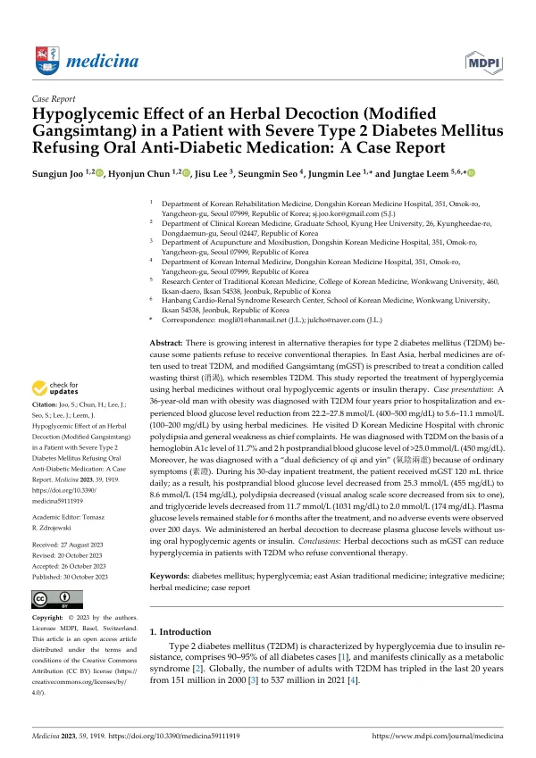

Hypoglycemic Effect of an Herbal Decoction (Modified Gangsimtang) in a Patient with Severe Type 2 Diabetes Mellitus Refusing Oral Anti-Diabetic Medication: A Case Report
Joo S, Chun H, Lee J, Seo S, Lee J, Leem J
Medicina 59(11):1919

첫 장 · 오픈액세스First page · open access
논문 소개Summary
2형 당뇨병은 인슐린 저항성으로 인한 고혈당이 특징이며 전체 당뇨의 90~95%를 차지합니다. 전 세계 성인 환자는 2000년부터 2021년까지 20년 사이 세 배가 되었습니다. 일차 약제인 메트포르민에는 젖산증 같은 부작용이 알려져 있고, 어떤 환자는 통상 치료 자체를 거부합니다. 이 증례의 환자가 그랬습니다.
36세 비만 남성으로 4년 전 2형 당뇨병을 진단받았습니다. 경구 혈당강하제나 인슐린 없이 한약만으로 혈당을 22.2~27.8 mmol/L(400~500 mg/dL)에서 5.6~11.1 mmol/L(100~200 mg/dL)까지 낮춘 경험이 있었고, 만성적인 갈증과 전신 무력감을 주소로 한방병원을 찾았습니다. 당화혈색소 11.7%, 식후 2시간 혈당 25.0 mmol/L(450 mg/dL) 초과로 2형 당뇨병이 확인되었습니다. 평소 증상을 근거로 기음양허로 변증했습니다.
30일 입원 기간 동안 가감강심탕을 120 밀리리터씩 하루 세 번 투여했습니다. 식후 혈당은 25.3 mmol/L(455 mg/dL)에서 8.6 mmol/L(154 mg/dL)로 내려갔고, 갈증은 시각통증척도 6점에서 1점으로 줄었으며, 중성지방은 11.7 mmol/L(1,031 mg/dL)에서 2.0 mmol/L(174 mg/dL)로 떨어졌습니다. 치료 뒤 6개월 동안 혈당이 안정적으로 유지되었고 200일 동안 이상반응은 관찰되지 않았습니다.
강심탕은 동아시아에서 소갈(消渴)이라 부르는, 2형 당뇨병과 닮은 상태에 쓰던 처방입니다. 이 증례는 통상 치료를 거부하는 환자에게서 한약 탕제로 고혈당을 낮출 수 있음을 보였습니다.
다만 여기서 멈춰야 합니다. 증례 하나이고, 입원 기간의 식이 관리가 함께 이루어졌습니다. 무엇보다 통상 치료를 거부한 환자를 대상으로 한 기록이지 통상 치료 대신 쓰라는 근거가 아닙니다.
Type 2 diabetes is characterised by hyperglycaemia from insulin resistance and accounts for 90 to 95% of all diabetes. The number of adults living with it tripled over the twenty years from 2000 to 2021. Metformin, the first-line agent, carries known adverse effects such as lactic acidosis, and some patients refuse conventional therapy altogether. This patient was one of them.
A 36-year-old man with obesity had been diagnosed with type 2 diabetes four years earlier. He had already brought his glucose down from 22.2–27.8 mmol/L (400–500 mg/dL) to 5.6–11.1 mmol/L (100–200 mg/dL) using herbal medicine alone, and presented to a Korean medicine hospital with chronic polydipsia and general weakness. Type 2 diabetes was confirmed on a haemoglobin A1c of 11.7% and a two-hour postprandial glucose above 25.0 mmol/L (450 mg/dL). Pattern identification from his ordinary symptoms was dual deficiency of qi and yin.
Over 30 days as an inpatient he received modified Gangsimtang, 120 mL three times daily. Postprandial glucose fell from 25.3 mmol/L (455 mg/dL) to 8.6 mmol/L (154 mg/dL), polydipsia fell from 6 to 1 on the visual analogue scale, and triglycerides fell from 11.7 mmol/L (1,031 mg/dL) to 2.0 mmol/L (174 mg/dL). Plasma glucose remained stable for six months after treatment and no adverse events were observed over 200 days.
Gangsimtang has been prescribed in East Asia for the condition called wasting thirst, which resembles type 2 diabetes. This case shows that a herbal decoction can reduce hyperglycaemia in a patient who refuses conventional therapy.
It must stop there. This is one case, and dietary management accompanied the inpatient stay. Above all, it is a record of a patient who had already refused conventional therapy — not a warrant for using this in place of it.
인용Cite
Joo S, Chun H, Lee J, Seo S, Lee J, Leem J. Hypoglycemic Effect of an Herbal Decoction (Modified Gangsimtang) in a Patient with Severe Type 2 Diabetes Mellitus Refusing Oral Anti-Diabetic Medication: A Case Report. Medicina. 2023;59(11):1919. doi:10.3390/medicina59111919